# We need the pipeline function to perform the task:
from transformers import pipeline
# We need a function that can split the text into sentences:
from nltk.tokenize import sent_tokenize
# We need pandas for all the data work:
import pandas as pdSession 4: Sentiment analysis
The final NLP task we will focus on in this course is Sentiment Analysis. Unlike the previous tasks, which emphasized extracting information from text by identifying topics, specific word patterns, or particular token types, sentiment analysis takes a more nuanced approach. It involves understanding and categorizing the sentiment behind written text, aiming to qualify sentences, paragraphs, or entire documents based on the emotions, attitudes, or opinions they convey.
A common application of sentiment analysis is found in analyzing product reviews. For example, statements like “I hate this product” or “I love this product; I use it every day” clearly express the emotional stance of the reviewer. This makes sentiment analysis a cornerstone of marketing strategies, as it helps companies gauge customer satisfaction and improve their offerings.
However, the applications of sentiment analysis extend far beyond product reviews. Advanced NLP techniques, such as using BERT models, allow us to uncover a wide spectrum of sentiments and emotions within texts. These models enable the identification of emotions like anger, joy, or love; varying degrees of satisfaction, from highly satisfied to deeply dissatisfied; and even nuanced aspects like the polarity of a statement (e.g., subjective versus objective).
In the context of innovation sciences, sentiment analysis becomes a powerful tool for addressing questions about the social acceptance of new technologies, policies, or solutions. For example, it can help researchers analyze public opinion on emerging technologies, identify concerns or enthusiasm expressed in public debates, and assess emotional responses to innovation-driven policies. By applying sentiment analysis, we can gain deeper insights into the emotional and attitudinal dimensions of societal reactions to innovation, providing valuable guidance for decision-making and policy design.
1. Installing packages
We won’t have to install anything, we will only use packages we have already installed. The logic of what we’ll do is the same as for NER: we set up a pipeline, and transform the results so we can prepare them for analysis.
2. We load the packages required:
Pandas and nltk you are familiar with by now. You can see that we import the pipeline function and the sent_tokenize function. The pipeline is what allows us to streamline the sentiment analysis task, the sent_tokenize allows us to split a text at the level of the sentence. We will see in a bit why this is important for this task.
3. Import the data
For illustrating we will use news articles from Lexis Uni. You can (preferably) load you own data here, otherwise use the data from Blackboard.
# 1. Load the data
articles_df = pd.read_csv("Protein_LU_2000_2024.csv", sep = ";")
articles_df
Document Identifiers:
Keep in mind that we will in fine connect this the results of the sentiment analysis with other metadata so we need to ensure that we keep a document identifier in the datasets while working with them. The identifier will allow us to connect to the metadata. This is also the case if we split the text at the level of the sentence!
4. Where to split the data
At this stage we need to decide how we are going to identify emotion/sentiment in a text. Theoretically this means that we need to consider at what level we expect the emotion to be detectable. If we take a whole document we might get a mix of emotions, but we might need the whole document to identify subjectivity. Detailed emotions such as anger and love might be more visible at the sentence level. This is the first decision we need to make. In accordance with this decision we split the data at the relevant level.
5. Analysis at the document level: Polarity
Let’s start with a identifying polarity in texts, this is usually done at the document level, we don’t have to split the text for now. Polarity analysis is basically a classification exercice where we assign either a neutral class or subjective class to a text. A probability score shows us how likely the class is for a given document.
The setup is similar to NER, with one addition. The models used for Sentiment analysis have a limit in the number of tokens they can handle. This means that we either cut our text down to a specific length, or we add an argument to the pipeline that specifies that it has to do this for us. This addition step is the tokenizer_kwargs that you can see in the script below.
- padding: Ensures that all tokenized inputs have the same length by adding padding tokens to shorter sequences. True means that shorter sequences will be padded to match the length of the longest sequence in the batch or to the max_length (if specified). This is necessary because most deep learning models require inputs of consistent dimensions.
- truncation: Ensures that input sequences longer than the model’s maximum token length are truncated to fit within the limit. True means that sequences longer than the specified max_length will be cut off. Transformers like BERT have a limit on the number of tokens they can process in a single input (e.g., 512 tokens for BERT). Truncation ensures that overly long inputs do not exceed this limit.
- max_length: Defines the maximum length an input can have. In this case we set this to 512 since it matches the maximum number of tokens BERT can take.
# We start by setting up a basic pipeline. The first argument defines the task we want to do
# here we want to perform "sentiment-analysis"
subjective_pipeline = pipeline("sentiment-analysis", model= "cffl/bert-base-styleclassification-subjective-neutral", device = 0)
# The models that we run have a limitation in the number of tokens they can handle
# we add the following arguments to truncate the text at 512 tokens
tokenizer_arguments = {'padding':True,'truncation':True,'max_length':512}When using the pipeline, we add the tokenizer_arguments to the function to include them:
prediction = subjective_pipeline('sample text to predict',**tokenizer_kwargs)This is the basic setup of the model. We will use this pipeline on each of the documents in our corpus. We will use a loop to do this.
# we create an empty dataframe that will receivt the final outputs
sub_obj = pd.DataFrame(columns=["label", "score", "ID"])
for i in range(num_docs):
# we run the task on article i:
tmp = subjective_pipeline(articles_df.loc[i,'Article'], **tokenizer_arguments)
# for this we transform the result into a df
tmp = pd.DataFrame(tmp)
# then we add the ID
tmp['ID'] = articles_df.iloc[i,0]
# and now we add the result for this document to the final dataframe
sub_obj = pd.concat([sub_obj, tmp], ignore_index=True)sub_obj contains the output of the model for each of the documents:
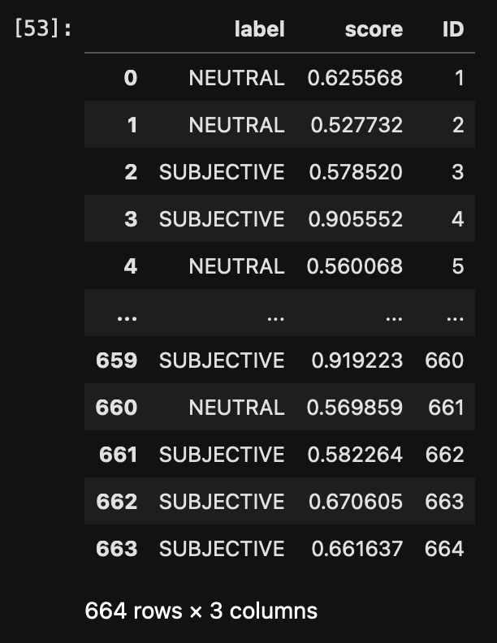
The ID gives us the document identifier, the label tells us how the article is perceived and the score is the confidence. The confidence scores are not always easy to interpret nor is it easy to decide on a cutoff. Values vary with data sets, datatypes, and themes. So let’s visualize the score to get a better idea of their distribution.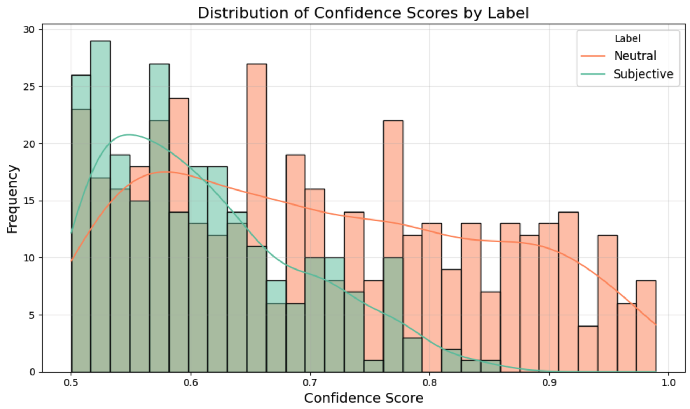
Notice that there is no confidence score below 0.5. This is the case because we have a binary classifier here, so anything below 0.5 is considered to be part of the opposite class. We do see that the classifier gives much higher scores to neutral documents than it does to subjective documents. It’s easier to class something as neutral, subjectivity is less clear-cut. It’s always good practice to read a couple of the lower confidence documents to assess whether or not they are correctly classified. If not, you can subset the set to a higher score.
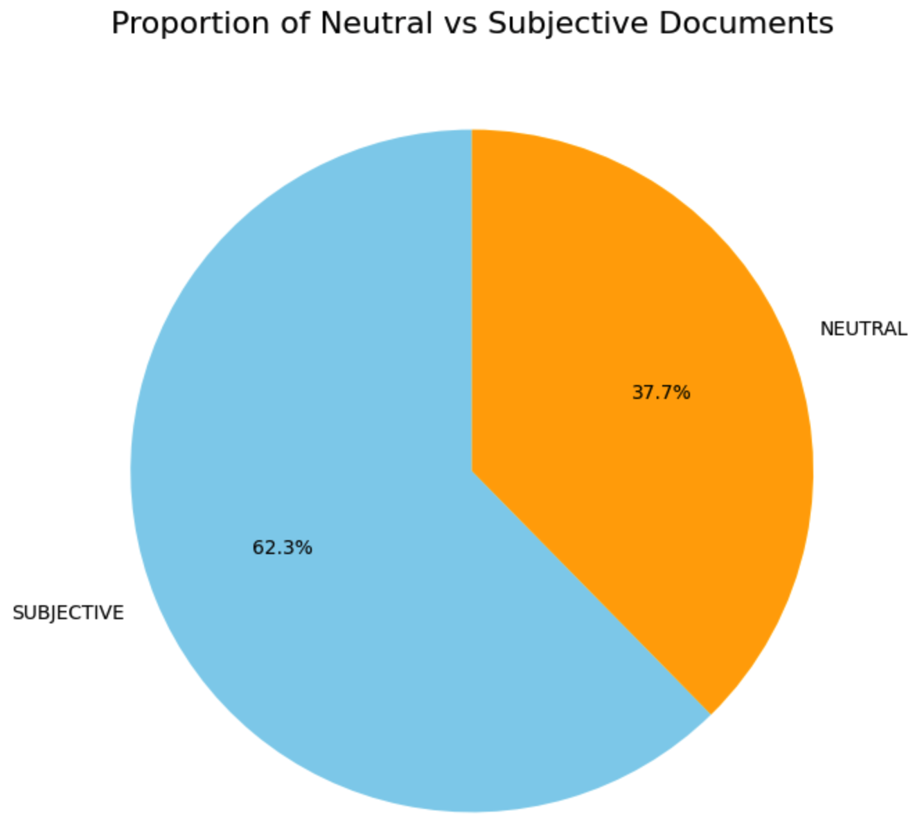
Let’s push the analysis a bit with some other data. We know which newspaper published each article. Let’s see the balance of neutral/subjective per outlet:
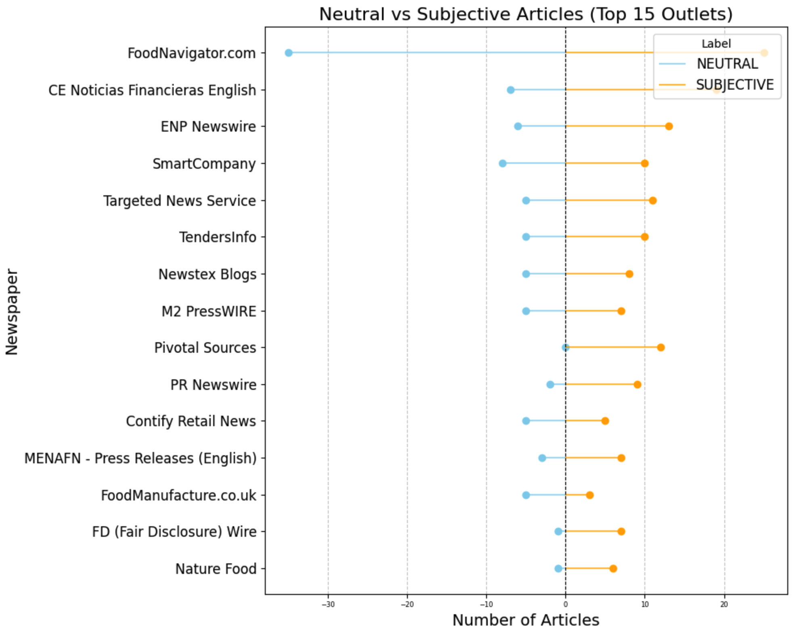
The first outlet has many neutral and many subjective, there is a balance between the two, but still quite some subjective articles. Pivotal Sources has no neutral articles, all of the 12 articles are subjective. The results show that most of the leading outlets on the topic have a balance towards subjectivity.This makes me curious what the differences are between the documents, are there different words in the two types of documents? Let’s make a wordcloud for each set:
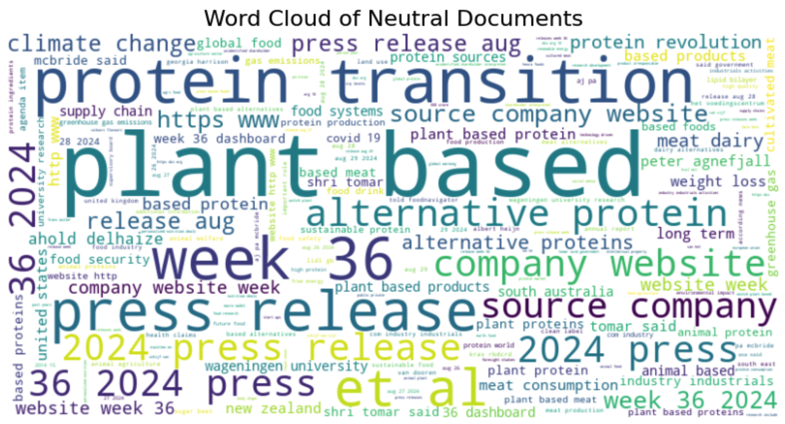
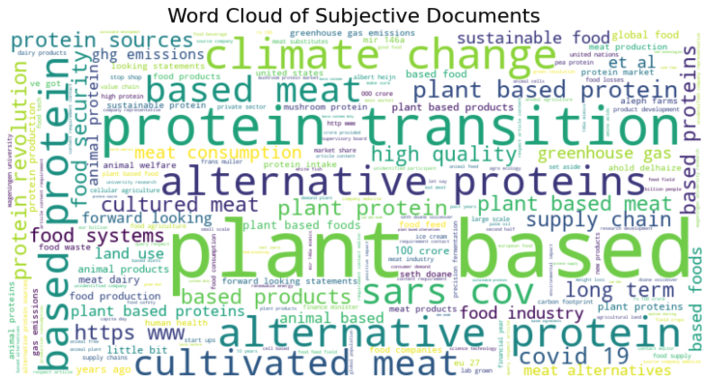
The neutral documents contain different types of articles, we see information from company websites, press releases, and word related to urls and websites. We could argue that many of these articles should be removed from the dataset since they do not necessarily contribute to the types of analysis we want to run. Another choice to make!
Just for fun, let’s have a look at the words per outlet (i’ll let you be the judge of what’s happening here and which issues need to be adressed).
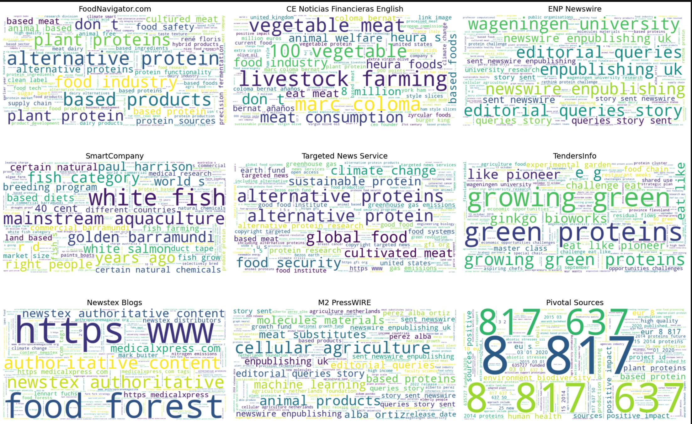
6. Emotion detection
Now we go more into the details of the text by analysing emotions. This is also a classification task, but at the level of the sentence. Manu models have been trained on reviews or tweets which are short texts. Since larger texts often contain many sentences that are neutral, the emotion is difficult to extract. We therefore search at the level of the sentence, and then decide how we aggregate this to the level of the document. For example is a text has 100 sentences and 1 is angry we can decide that 1/100 is not much. We can also compute the average number of angry sentences per document in the corpus and extract those that are above average. Basically this approach gives us flexibility.
6.1 Data preparation
We start with downloading a model that will help us splitting the data at the level of the sentence
nltk.download('punkt')Then we want to ensure that we
def split_sentences(row):
# we split up the article, the sent_tokenize functions tokenizes at the level of the sentence
sentences = sent_tokenize(row['Article'])
# then we for each row extracted from the dataframe we combine the ID and the text of the sentence
return [{'ID': row['ID'], 'sentence': sentence} for sentence in sentences]We want to apply this function to each row of the dataframe we use the following code to do this:
sentences_df = pd.DataFrame([sentence for _, row in df.iterrows() for sentence in split_sentences(row)])
# then we remove any sentences that are too short:
# we need to remove some sentences that are too short
df_filtered = sentences_df[sentences_df['sentence'].str.split(" ").apply(len) >= 3]
# and we reset the index of the dataframe so we can loop over it
df_filtered = df_filtered.reset_index()
# we export this dataframe for safety. It might take a while to run this script. If something goes wrong we can simply load this file, instead of starting from scratch
df_filtered.to_csv('sentences_df.csv', index = False)Explanation of the code:
- df.iterrows(): This iterates over the rows of the DataFrame df. Each row is returned as a tuple (index, row) where: index is the index of the row. row is a pandas Series object representing the data in the row.
- for , row in df.iterrows(): The underscore is used to ignore the index because it’s not needed.
- split_sentences(row): This is a function that processes the row and splits its content into multiple sentences.
- for sentence in split_sentences(row): Loops through each sentence returned by split_sentences(row).
6.2 Setting up the pipeline
Once we have the dataframe we want with one sentence per row we can set up the pipeline. This is identical to the previous one, we only swap out the model for one with more precise emotions.
sentiment_pipeline = pipeline("sentiment-analysis", model= "joeddav/distilbert-base-uncased-go-emotions-student", device = 0)
tokenizer_arguments = {'padding':True,'truncation':True,'max_length':512}With the pipeline set up we use the same procedure as before to detect emotion in each sentence:
6.3 Running the model
# We set up an empty dataframe to which we can add the results
emotions = pd.DataFrame(columns=["label", "score", "ID"])
# we loop over all rows of the dataframe, we need to know how many rows there are
df_filtered.shape[0]
# and now we loop.
# for testing you can adjust the value in range to have this run faster
for i in range(38439):
tmp = sentiment_pipeline(df_filtered.loc[i,'sentence'],**tokenizer_kwargs)
# we add the identifier of the document
# for this we transform the result into a df
tmp = pd.DataFrame(tmp)
# then we add the ID of the document
tmp['ID'] = df_filtered.iloc[i,1]
# we use i as an identifier for the sentence. This is important in case we want to
# combine NER with Emotions
tmp['Sentence_ID'] = i
# and now we add the result for this document to the final dataframe
emotions = pd.concat([emotions, tmp], ignore_index=True)
# export for safety
emotions.to_csv("emotions_results_persentence.csv", index=False)The result is a dataframe of the following format. Notice that we have an ID for each sentence and an ID for each document.
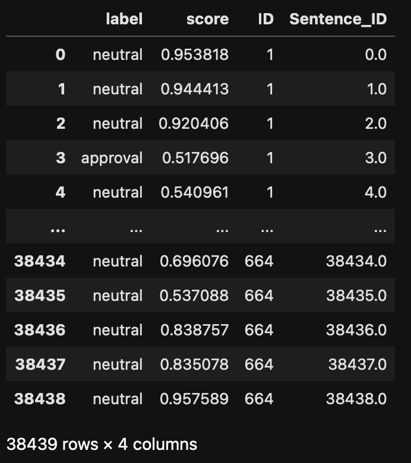
6.4 Analysis
Once we have the results of the model, we check the distribution of the labels. This is an important step to check both that the model fits your purpose but also that it performs well.
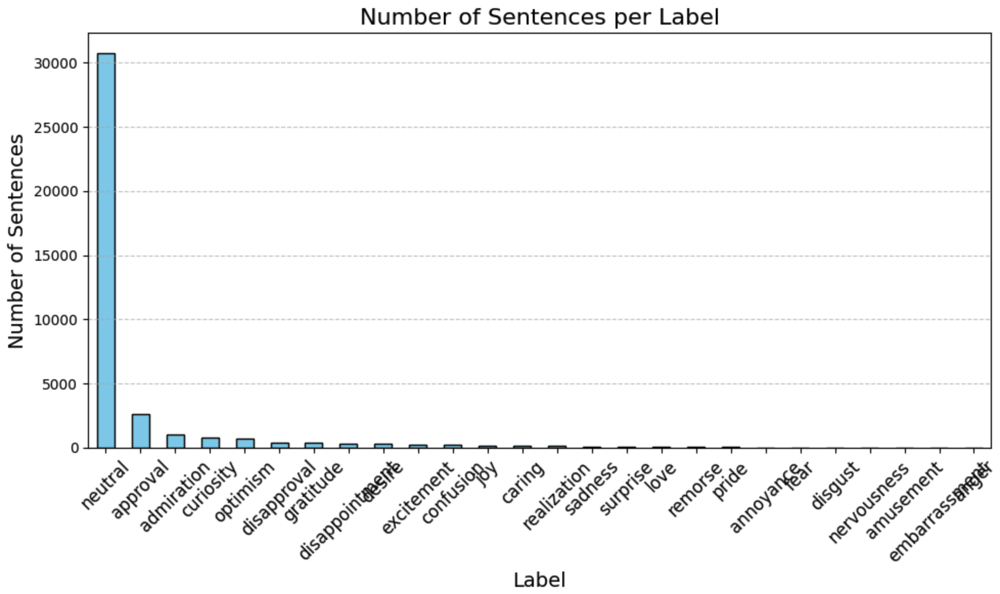
The large majority of the sentences are classified as neutral, which is good! Having neutral sentences in larger texts allows us to normalize the emotionally loaded sentences. We can for example divide the number of approval sentences by the number of neutral sentences to remove effects related to document length. Let’s put that into practice. Let’s aim to provide an emotion tag to a document based on the labels of the sentences composing it. This means that we need a dataframe that has one document per row, and each column corresponds to an emotion. The value provides the number of sentences tagged with this emotion in the document:
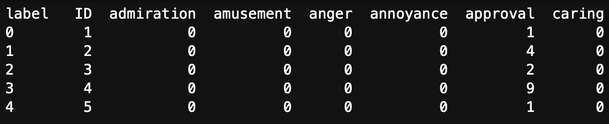
Here, the ID is the document identifier. Document 1 has one sentence that was tagged as approval. Document 4 has 9 sentences tagged as approval.
To create this dataframe we need to regroup our initial output by document ID and by label:
emotion_counts_per_document = emotions.groupby(['ID', 'label']).size().unstack(fill_value=0).reset_index()This give the dataframe in Table 1. Now we need to divide all the columns by the number of neutral sentences. Note that the screenshot in Table 1 only shows part of the dataframe, in reality it has 27 columns, the last one has the number of neutral sentences.
epsilon = 1e-6 # Small value to prevent division by zero
# we divide every score by the number of neutral sentences
emotion_counts_per_document.iloc[:, 1:27] = emotion_counts_per_document.iloc[:, 1:27].div(emotion_counts_per_document.iloc[:, 20] +epsilon, axis=0)
# To assigne an emotion to a document we can take the highest fraction
emotion_counts_per_document['max_score'] = emotion_counts_per_document.iloc[:, 2:10].max(axis=1)
# we add the emotion that links to the score
emotion_counts_per_document['max_emotion'] = emotion_counts_per_document.iloc[:, 2:10].idxmax(axis=1) # Get the column (emotion) with the maximum score
# export for safe keeping
emotion_counts_per_document.to_csv("Emotion_score_per_doc.csv", index=False)
Caution !
Note that the script above uses the index of the columns. If you use a different model you might get more (or less) emotion tags and therefore a longer or shorter dataframe. It’s up to you to change the values to make this work!
This should result in a dataframe that looks like this:
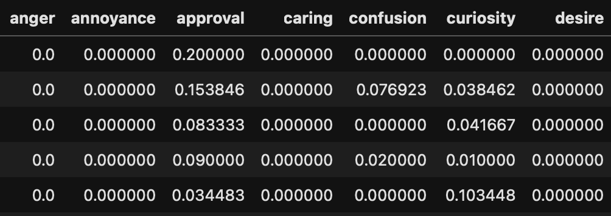
The values are now fractions of emotions normalised by the number of neutral sentences. Using this we can count the number of documents classified with specific emotions: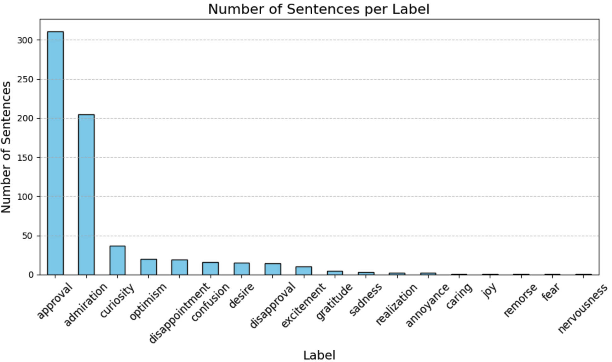
The results show that a large portion of the articles are classified as approval. For our context this shows that the content of the articles is largely approving of steps related to the protein transition. The second emotion is amusement, showing that in the end there are still some elements of novelty to new protein sources that evoke this emotion.
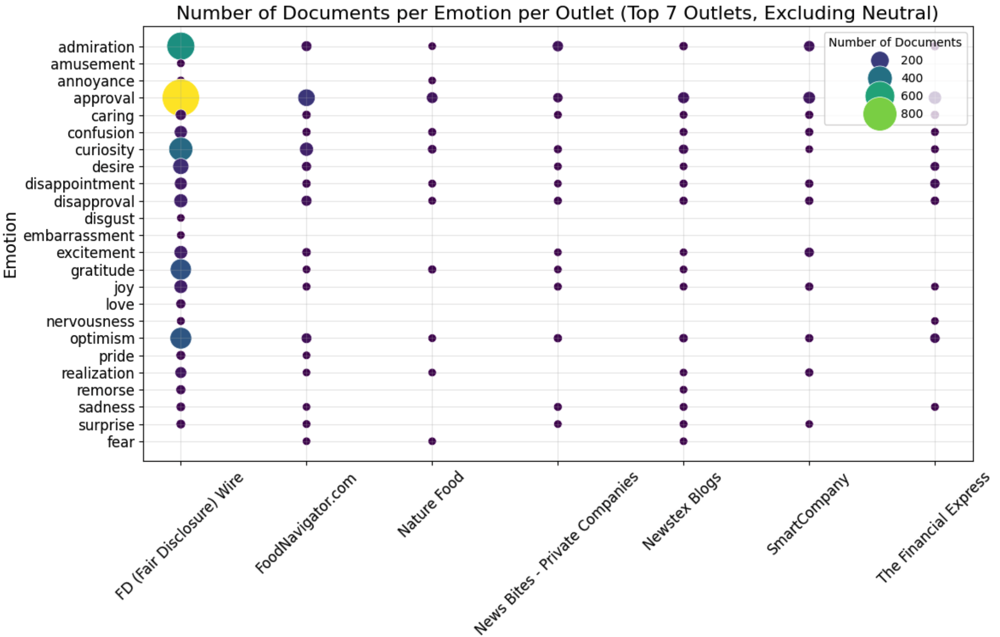
We can also compare profiles by creating radar plots. You can make these more readable by removing emotions from the radar, adjust what suits your analysis!
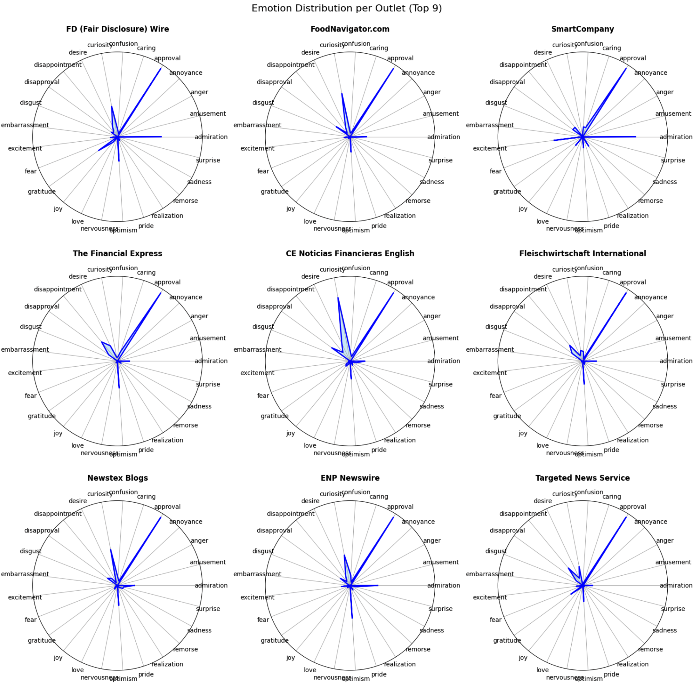